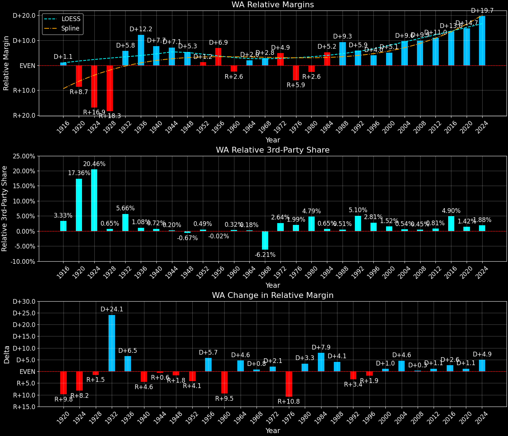

Washington (WA) — Statewide

Margins · 3rd-Party share · Pres. deltas

Relative margins · Relative 3rd-Party · Rel. deltas
Washington (WA) — Total Data
| Year | D | R | State Margin | Nat. Margin | Rel. Margin | Total votes | EVs |
|---|---|---|---|---|---|---|---|
| 1916 | 183,388(48.1%) | 167,208(43.9%) | D+4.2 | D+3.1 | D+1.1 | 380,994 | 7 |
| 1920 | 84,298(21.1%)(Δ -99,090) | 223,137(56.0%)(Δ 55,929) | R+34.8(Δ R+39.1) | R+26.2(Δ R+29.3) | R+8.7(Δ R+9.8) | 398,715(Δ 17,721) | 7 |
| 1924 | 42,842(10.2%)(Δ -41,456) | 220,224(52.2%)(Δ -2,913) | R+42.1(Δ R+7.3) | R+25.2(Δ D+1.0) | R+16.9(Δ R+8.2) | 421,549(Δ 22,834) | 7 |
| 1928 | 156,772(31.3%)(Δ 113,930) | 335,844(67.1%)(Δ 115,620) | R+35.8(Δ D+6.3) | R+17.4(Δ D+7.8) | R+18.3(Δ R+1.5) | 500,840(Δ 79,291) | 7 |
| 1932 | 353,260(57.5%)(Δ 196,488) | 208,645(33.9%)(Δ -127,199) | D+23.5(Δ D+59.3) | D+17.8(Δ D+35.2) | D+5.8(Δ D+24.1) | 614,814(Δ 113,974) | 8 |
| 1936 | 459,579(66.4%)(Δ 106,319) | 206,892(29.9%)(Δ -1,753) | D+36.5(Δ D+13.0) | D+24.3(Δ D+6.5) | D+12.2(Δ D+6.5) | 692,338(Δ 77,524) | 8 |
| 1940 | 462,145(58.2%)(Δ 2,566) | 322,123(40.6%)(Δ 115,231) | D+17.6(Δ R+18.9) | D+10.0(Δ R+14.3) | D+7.7(Δ R+4.6) | 793,833(Δ 101,495) | 8 |
| 1944 | 486,774(56.8%)(Δ 24,629) | 361,689(42.2%)(Δ 39,566) | D+14.6(Δ R+3.0) | D+7.5(Δ R+2.5) | D+7.1(Δ R+0.6) | 856,328(Δ 62,495) | 8 |
| 1948 | 475,165(52.6%)(Δ -11,609) | 386,315(42.7%)(Δ 24,626) | D+9.8(Δ R+4.8) | D+4.5(Δ R+3.0) | D+5.3(Δ R+1.8) | 904,058(Δ 47,730) | 8 |
| 1952 | 492,845(44.7%)(Δ 17,680) | 599,107(54.3%)(Δ 212,792) | R+9.6(Δ R+19.5) | R+10.9(Δ R+15.3) | D+1.2(Δ R+4.1) | 1,102,708(Δ 198,650) | 9 |
| 1956 | 523,002(45.4%)(Δ 30,157) | 620,430(53.9%)(Δ 21,323) | R+8.5(Δ D+1.2) | R+15.4(Δ R+4.5) | D+6.9(Δ D+5.7) | 1,150,889(Δ 48,181) | 9 |
| 1960 | 599,298(48.3%)(Δ 76,296) | 629,273(50.7%)(Δ 8,843) | R+2.4(Δ D+6.1) | D+0.2(Δ D+15.6) | R+2.6(Δ R+9.5) | 1,241,572(Δ 90,683) | 9 |
| 1964 | 779,881(62.0%)(Δ 180,583) | 470,366(37.4%)(Δ -158,907) | D+24.6(Δ D+27.0) | D+22.6(Δ D+22.4) | D+2.0(Δ D+4.6) | 1,258,556(Δ 16,984) | 9 |
| 1968 | 616,037(47.2%)(Δ -163,844) | 588,510(45.1%)(Δ 118,144) | D+2.1(Δ R+22.5) | R+0.7(Δ R+23.3) | D+2.8(Δ D+0.8) | 1,304,281(Δ 45,725) | 9 |
| 1972 | 568,334(38.6%)(Δ -47,703) | 837,135(56.9%)(Δ 248,625) | R+18.3(Δ R+20.4) | R+23.1(Δ R+22.4) | D+4.9(Δ D+2.1) | 1,470,847(Δ 166,566) | 9 |
| 1976 | 717,323(46.1%)(Δ 148,989) | 777,732(50.0%)(Δ -59,403) | R+3.9(Δ D+14.4) | D+2.1(Δ D+25.2) | R+5.9(Δ R+10.8) | 1,555,534(Δ 84,687) | 9 |
| 1980 | 650,193(37.3%)(Δ -67,130) | 865,244(49.7%)(Δ 87,512) | R+12.3(Δ R+8.5) | R+9.7(Δ R+11.8) | R+2.6(Δ D+3.3) | 1,742,394(Δ 186,860) | 9 |
| 1984 | 807,352(42.9%)(Δ 157,159) | 1,051,670(55.8%)(Δ 186,426) | R+13.0(Δ R+0.6) | R+18.2(Δ R+8.5) | D+5.2(Δ D+7.9) | 1,883,910(Δ 141,516) | 10 |
| 1988 | 933,516(50.0%)(Δ 126,164) | 903,835(48.5%)(Δ -147,835) | D+1.6(Δ D+14.6) | R+7.7(Δ D+10.5) | D+9.3(Δ D+4.1) | 1,865,253(Δ -18,657) | 10 |
| 1992 | 993,039(43.4%)(Δ 59,523) | 731,235(32.0%)(Δ -172,600) | D+11.4(Δ D+9.9) | D+5.6(Δ D+13.3) | D+5.9(Δ R+3.4) | 2,288,228(Δ 422,975) | 11 |
| 1996 | 1,123,323(49.8%)(Δ 130,284) | 840,712(37.3%)(Δ 109,477) | D+12.5(Δ D+1.1) | D+8.5(Δ D+3.0) | D+4.0(Δ R+1.9) | 2,253,837(Δ -34,391) | 11 |
| 2000 | 1,247,652(50.2%)(Δ 124,329) | 1,108,864(44.6%)(Δ 268,152) | D+5.6(Δ R+7.0) | D+0.5(Δ R+8.0) | D+5.1(Δ D+1.0) | 2,487,433(Δ 233,596) | 11 |
| 2004 | 1,510,201(52.8%)(Δ 262,549) | 1,304,894(45.6%)(Δ 196,030) | D+7.2(Δ D+1.6) | R+2.5(Δ R+3.0) | D+9.6(Δ D+4.6) | 2,859,084(Δ 371,651) | 11 |
| 2008 | 1,750,848(57.7%)(Δ 240,647) | 1,229,216(40.5%)(Δ -75,678) | D+17.2(Δ D+10.0) | D+7.3(Δ D+9.7) | D+9.9(Δ D+0.3) | 3,036,878(Δ 177,794) | 11 |
| 2012 | 1,755,396(56.2%)(Δ 4,548) | 1,290,670(41.3%)(Δ 61,454) | D+14.9(Δ R+2.3) | D+3.9(Δ R+3.4) | D+11.0(Δ D+1.1) | 3,125,516(Δ 88,638) | 12 |
| 2016 | 1,742,718(52.5%)(Δ -12,678) | 1,221,747(36.8%)(Δ -68,923) | D+15.7(Δ D+0.8) | D+2.1(Δ R+1.8) | D+13.6(Δ D+2.6) | 3,317,019(Δ 191,503) | 12 |
| 2020 | 2,369,612(58.0%)(Δ 626,894) | 1,584,651(38.8%)(Δ 362,904) | D+19.2(Δ D+3.5) | D+4.5(Δ D+2.4) | D+14.7(Δ D+1.1) | 4,087,631(Δ 770,612) | 12 |
| 2024 | 2,245,849(57.2%)(Δ -123,763) | 1,530,923(39.0%)(Δ -53,728) | D+18.2(Δ R+1.0) | R+1.5(Δ R+5.9) | D+19.7(Δ D+4.9) | 3,924,243(Δ -163,388) | 12 |
Column explanations
- Δ
- Change (delta) in the value from the previous election year.
- Year
- Election year.
- D
- Number of votes for the Democratic candidate (raw count(pct%)).
- R
- Number of votes for the Republican candidate (raw count(pct%)).
- State Margin
- Margin between the two major-party candidates, including third-party votes ((D - R)/total).
- Nat. Margin
- The national presidential margin for that year, including third-party votes ((D_total - R_total)/total_votes).
- Rel. Margin
- The presidential margin relative to the national presidential margin (Margin - Nat. Margin).
- Total votes
- Total voter turnout or ballots cast (when provided).
- EVs
- Number of electoral votes allocated to this state or unit.
Washington (WA) — Third-Party Data
| Year | D | R | Other votes | State 3rd-Party Share | 3rd-Party Nat. Share | 3rd-Party Rel. Share |
|---|---|---|---|---|---|---|
| 1916 | 183,388(48.1%) | 167,208(43.9%) | 30,398(8.0%) | 7.98% | 4.64% | 3.33% |
| 1920 | 84,298(21.1%)(Δ -99,090) | 223,137(56.0%)(Δ 55,929) | 91,280(22.9%) | 22.89% | 5.53% | 17.36% |
| 1924 | 42,842(10.2%)(Δ -41,456) | 220,224(52.2%)(Δ -2,913) | 158,483(37.6%) | 37.60% | 17.14% | 20.46% |
| 1928 | 156,772(31.3%)(Δ 113,930) | 335,844(67.1%)(Δ 115,620) | 8,224(1.6%) | 1.64% | 0.99% | 0.65% |
| 1932 | 353,260(57.5%)(Δ 196,488) | 208,645(33.9%)(Δ -127,199) | 52,909(8.6%) | 8.61% | 2.94% | 5.66% |
| 1936 | 459,579(66.4%)(Δ 106,319) | 206,892(29.9%)(Δ -1,753) | 25,867(3.7%) | 3.74% | 2.66% | 1.08% |
| 1940 | 462,145(58.2%)(Δ 2,566) | 322,123(40.6%)(Δ 115,231) | 9,565(1.2%) | 1.20% | 0.48% | 0.72% |
| 1944 | 486,774(56.8%)(Δ 24,629) | 361,689(42.2%)(Δ 39,566) | 7,865(0.9%) | 0.92% | 0.72% | 0.20% |
| 1948 | 475,165(52.6%)(Δ -11,609) | 386,315(42.7%)(Δ 24,626) | 42,578(4.7%) | 4.71% | 5.38% | -0.67% |
| 1952 | 492,845(44.7%)(Δ 17,680) | 599,107(54.3%)(Δ 212,792) | 10,756(1.0%) | 0.98% | 0.49% | 0.49% |
| 1956 | 523,002(45.4%)(Δ 30,157) | 620,430(53.9%)(Δ 21,323) | 7,457(0.6%) | 0.65% | 0.67% | -0.02% |
| 1960 | 599,298(48.3%)(Δ 76,296) | 629,273(50.7%)(Δ 8,843) | 13,001(1.0%) | 1.05% | 0.73% | 0.32% |
| 1964 | 779,881(62.0%)(Δ 180,583) | 470,366(37.4%)(Δ -158,907) | 8,309(0.7%) | 0.66% | 0.48% | 0.18% |
| 1968 | 616,037(47.2%)(Δ -163,844) | 588,510(45.1%)(Δ 118,144) | 99,734(7.6%) | 7.65% | 13.86% | -6.21% |
| 1972 | 568,334(38.6%)(Δ -47,703) | 837,135(56.9%)(Δ 248,625) | 65,378(4.4%) | 4.44% | 1.80% | 2.64% |
| 1976 | 717,323(46.1%)(Δ 148,989) | 777,732(50.0%)(Δ -59,403) | 60,479(3.9%) | 3.89% | 1.90% | 1.99% |
| 1980 | 650,193(37.3%)(Δ -67,130) | 865,244(49.7%)(Δ 87,512) | 226,957(13.0%) | 13.03% | 8.24% | 4.79% |
| 1984 | 807,352(42.9%)(Δ 157,159) | 1,051,670(55.8%)(Δ 186,426) | 24,888(1.3%) | 1.32% | 0.67% | 0.65% |
| 1988 | 933,516(50.0%)(Δ 126,164) | 903,835(48.5%)(Δ -147,835) | 27,902(1.5%) | 1.50% | 0.98% | 0.51% |
| 1992 | 993,039(43.4%)(Δ 59,523) | 731,235(32.0%)(Δ -172,600) | 563,954(24.6%) | 24.65% | 19.55% | 5.10% |
| 1996 | 1,123,323(49.8%)(Δ 130,284) | 840,712(37.3%)(Δ 109,477) | 289,802(12.9%) | 12.86% | 10.05% | 2.81% |
| 2000 | 1,247,652(50.2%)(Δ 124,329) | 1,108,864(44.6%)(Δ 268,152) | 130,917(5.3%) | 5.26% | 3.75% | 1.52% |
| 2004 | 1,510,201(52.8%)(Δ 262,549) | 1,304,894(45.6%)(Δ 196,030) | 43,989(1.5%) | 1.54% | 1.00% | 0.54% |
| 2008 | 1,750,848(57.7%)(Δ 240,647) | 1,229,216(40.5%)(Δ -75,678) | 56,814(1.9%) | 1.87% | 1.42% | 0.45% |
| 2012 | 1,755,396(56.2%)(Δ 4,548) | 1,290,670(41.3%)(Δ 61,454) | 79,450(2.5%) | 2.54% | 1.73% | 0.81% |
| 2016 | 1,742,718(52.5%)(Δ -12,678) | 1,221,747(36.8%)(Δ -68,923) | 352,554(10.6%) | 10.63% | 5.73% | 4.90% |
| 2020 | 2,369,612(58.0%)(Δ 626,894) | 1,584,651(38.8%)(Δ 362,904) | 133,368(3.3%) | 3.26% | 1.84% | 1.42% |
| 2024 | 2,245,849(57.2%)(Δ -123,763) | 1,530,923(39.0%)(Δ -53,728) | 147,471(3.8%) | 3.76% | 1.88% | 1.88% |
Column explanations
- Year
- Election year.
- D
- Number of votes for the Democratic candidate (raw count(pct%)).
- R
- Number of votes for the Republican candidate (raw count(pct%)).
- Other votes
- Number of votes for third-party (other) candidates (raw count(pct%)).
- State 3rd-Party Share
- Share of the vote received by third-party (other) candidates.
- 3rd-Party Nat. Share
- The national third-party share for that year (3rd-Party votes / total votes).
- 3rd-Party Rel. Share
- Third-party share relative to the national third-party share (3rd-Party share - Nat. 3rd-Party share).

Two-party margins · relative · deltas
Washington (WA) — Two-Party Data
| Year | D | R | 2-Party Margin | 2-Party Nat. Margin | 2-Party Rel. Margin | EVs |
|---|---|---|---|---|---|---|
| 1916 | 183,388(52.3%) | 167,208(47.7%) | D+4.6 | D+3.3 | D+1.3 | 7 |
| 1920 | 84,298(27.4%)(Δ -99,090) | 223,137(72.6%)(Δ 55,929) | R+45.2(Δ R+49.8) | R+27.7(Δ R+31.0) | R+17.5(Δ R+18.8) | 7 |
| 1924 | 42,842(16.3%)(Δ -41,456) | 220,224(83.7%)(Δ -2,913) | R+67.4(Δ R+22.3) | R+30.4(Δ R+2.7) | R+37.0(Δ R+19.5) | 7 |
| 1928 | 156,772(31.8%)(Δ 113,930) | 335,844(68.2%)(Δ 115,620) | R+36.4(Δ D+31.1) | R+17.6(Δ D+12.8) | R+18.8(Δ D+18.2) | 7 |
| 1932 | 353,260(62.9%)(Δ 196,488) | 208,645(37.1%)(Δ -127,199) | D+25.7(Δ D+62.1) | D+18.3(Δ D+35.9) | D+7.4(Δ D+26.2) | 8 |
| 1936 | 459,579(69.0%)(Δ 106,319) | 206,892(31.0%)(Δ -1,753) | D+37.9(Δ D+12.2) | D+24.9(Δ D+6.6) | D+13.0(Δ D+5.6) | 8 |
| 1940 | 462,145(58.9%)(Δ 2,566) | 322,123(41.1%)(Δ 115,231) | D+17.9(Δ R+20.1) | D+10.0(Δ R+14.9) | D+7.9(Δ R+5.1) | 8 |
| 1944 | 486,774(57.4%)(Δ 24,629) | 361,689(42.6%)(Δ 39,566) | D+14.7(Δ R+3.1) | D+7.5(Δ R+2.5) | D+7.2(Δ R+0.7) | 8 |
| 1948 | 475,165(55.2%)(Δ -11,609) | 386,315(44.8%)(Δ 24,626) | D+10.3(Δ R+4.4) | D+4.7(Δ R+2.8) | D+5.6(Δ R+1.6) | 8 |
| 1952 | 492,845(45.1%)(Δ 17,680) | 599,107(54.9%)(Δ 212,792) | R+9.7(Δ R+20.0) | R+10.9(Δ R+15.6) | D+1.2(Δ R+4.4) | 9 |
| 1956 | 523,002(45.7%)(Δ 30,157) | 620,430(54.3%)(Δ 21,323) | R+8.5(Δ D+1.2) | R+15.5(Δ R+4.6) | D+7.0(Δ D+5.8) | 9 |
| 1960 | 599,298(48.8%)(Δ 76,296) | 629,273(51.2%)(Δ 8,843) | R+2.4(Δ D+6.1) | D+0.2(Δ D+15.7) | R+2.6(Δ R+9.6) | 9 |
| 1964 | 779,881(62.4%)(Δ 180,583) | 470,366(37.6%)(Δ -158,907) | D+24.8(Δ D+27.2) | D+22.7(Δ D+22.5) | D+2.1(Δ D+4.7) | 9 |
| 1968 | 616,037(51.1%)(Δ -163,844) | 588,510(48.9%)(Δ 118,144) | D+2.3(Δ R+22.5) | R+0.8(Δ R+23.5) | D+3.1(Δ D+1.0) | 9 |
| 1972 | 568,334(40.4%)(Δ -47,703) | 837,135(59.6%)(Δ 248,625) | R+19.1(Δ R+21.4) | R+23.6(Δ R+22.8) | D+4.4(Δ D+1.3) | 9 |
| 1976 | 717,323(48.0%)(Δ 148,989) | 777,732(52.0%)(Δ -59,403) | R+4.0(Δ D+15.1) | D+2.1(Δ D+25.7) | R+6.1(Δ R+10.6) | 9 |
| 1980 | 650,193(42.9%)(Δ -67,130) | 865,244(57.1%)(Δ 87,512) | R+14.2(Δ R+10.2) | R+10.6(Δ R+12.7) | R+3.6(Δ D+2.6) | 9 |
| 1984 | 807,352(43.4%)(Δ 157,159) | 1,051,670(56.6%)(Δ 186,426) | R+13.1(Δ D+1.0) | R+18.3(Δ R+7.7) | D+5.2(Δ D+8.8) | 10 |
| 1988 | 933,516(50.8%)(Δ 126,164) | 903,835(49.2%)(Δ -147,835) | D+1.6(Δ D+14.8) | R+7.8(Δ D+10.5) | D+9.4(Δ D+4.2) | 10 |
| 1992 | 993,039(57.6%)(Δ 59,523) | 731,235(42.4%)(Δ -172,600) | D+15.2(Δ D+13.6) | D+6.9(Δ D+14.7) | D+8.3(Δ R+1.1) | 11 |
| 1996 | 1,123,323(57.2%)(Δ 130,284) | 840,712(42.8%)(Δ 109,477) | D+14.4(Δ R+0.8) | D+9.5(Δ D+2.6) | D+4.9(Δ R+3.4) | 11 |
| 2000 | 1,247,652(52.9%)(Δ 124,329) | 1,108,864(47.1%)(Δ 268,152) | D+5.9(Δ R+8.5) | D+0.5(Δ R+8.9) | D+5.4(Δ D+0.4) | 11 |
| 2004 | 1,510,201(53.6%)(Δ 262,549) | 1,304,894(46.4%)(Δ 196,030) | D+7.3(Δ D+1.4) | R+2.5(Δ R+3.0) | D+9.8(Δ D+4.4) | 11 |
| 2008 | 1,750,848(58.8%)(Δ 240,647) | 1,229,216(41.2%)(Δ -75,678) | D+17.5(Δ D+10.2) | D+7.4(Δ D+9.9) | D+10.1(Δ D+0.3) | 11 |
| 2012 | 1,755,396(57.6%)(Δ 4,548) | 1,290,670(42.4%)(Δ 61,454) | D+15.3(Δ R+2.2) | D+3.9(Δ R+3.4) | D+11.3(Δ D+1.2) | 12 |
| 2016 | 1,742,718(58.8%)(Δ -12,678) | 1,221,747(41.2%)(Δ -68,923) | D+17.6(Δ D+2.3) | D+2.2(Δ R+1.7) | D+15.3(Δ D+4.0) | 12 |
| 2020 | 2,369,612(59.9%)(Δ 626,894) | 1,584,651(40.1%)(Δ 362,904) | D+19.9(Δ D+2.3) | D+4.5(Δ D+2.3) | D+15.3(Δ R+0.0) | 12 |
| 2024 | 2,245,849(59.5%)(Δ -123,763) | 1,530,923(40.5%)(Δ -53,728) | D+18.9(Δ R+0.9) | R+1.5(Δ R+6.0) | D+20.4(Δ D+5.1) | 12 |
Column explanations
- Δ
- Change (delta) in the value from the previous election year.
- Year
- Election year.
- D
- Number of votes for the Democratic candidate (raw count(pct%)).
- R
- Number of votes for the Republican candidate (raw count(pct%)).
- 2-Party Margin
- Margin between the two major-party candidates, ignoring third-party votes ((D - R)/(D + R)).
- 2-Party Nat. Margin
- The national presidential margin for that year, including third-party votes ((D_total - R_total)/total_votes).
- 2-Party Rel. Margin
- The presidential margin relative to the national presidential margin (Margin - Nat. Margin).
- EVs
- Number of electoral votes allocated to this state or unit.